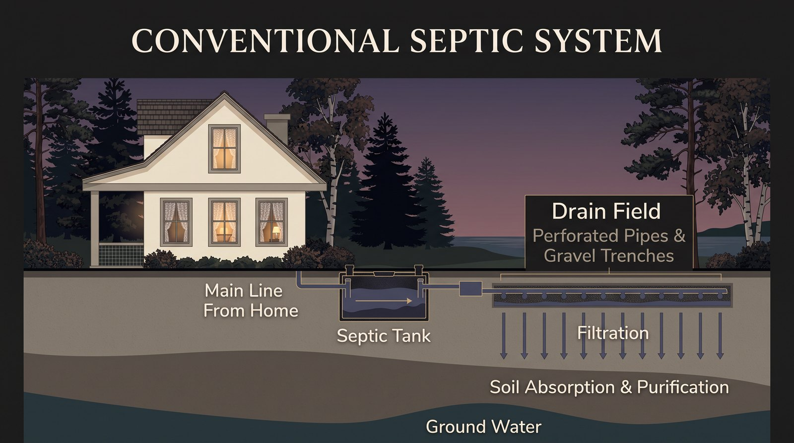
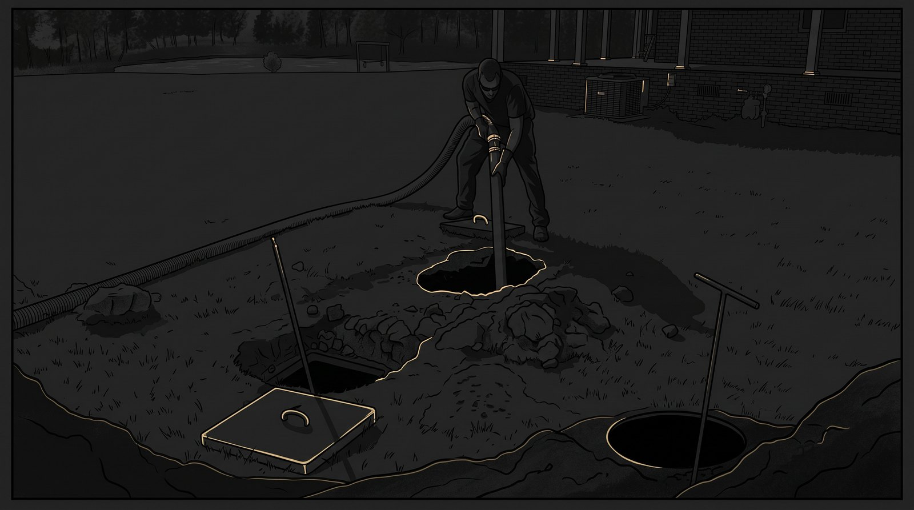
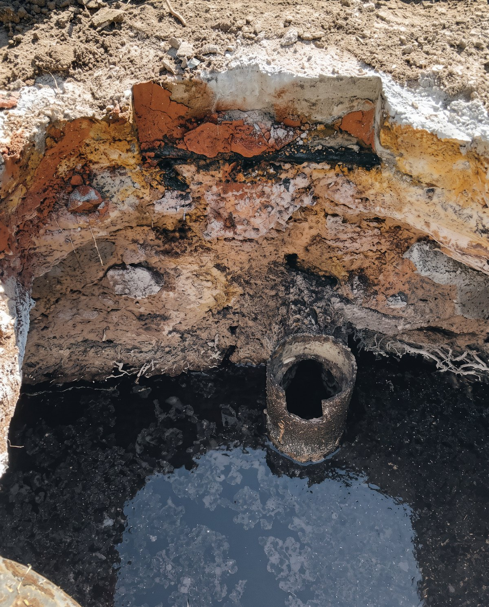

Buyer & seller guide
A septic clause in an Ontario offer is usually two separate protections: a seller warranty requiring a pump-out and inspection before closing at the seller's cost, and an independent buyer condition giving the buyer roughly seven banking days to complete their own inspection and walk away with their full deposit if unsatisfied. A true inspection includes a flow test on the leaching bed before pump-out. Local replacement costs run from about $12,000 for a tank alone to $20,000 to $26,000 for a full tank and leaching bed.
Key takeaways
- A septic clause is usually two clauses: a seller warranty with a pump-and-inspect requirement, and a separate buyer condition with its own inspection window and full deposit protection.
- A pump-and-inspect is not a full inspection. A true inspection includes a flow test on the leaching bed, run before the tank is pumped, so the inspector sees real operating conditions.
- Concrete tanks from the late 1980s through the 1990s are the local age band to watch. Sulfuric acid decays the concrete from the inside, starting at the inlet, the outlet, and the lid.
- Small money buys time: a hydraulic cement parging repair runs about $500 to $700, and swapping a concrete lid for plastic risers prevents the most avoidable failure.
- Sellers should pump and inspect before listing, not after an offer forces the timing. Replacement runs about $12,000 for a tank alone and $20,000 to $26,000 for tank plus leaching bed, so get three quotes.
The two clauses, and why they're not the same thing

A septic clause in an Ontario offer usually isn't one thing. It's two, doing different jobs, and mixing them up is where buyers and sellers get confused.
The first is a seller warranty. The seller states, to the best of their knowledge, that the system meets its permits, has been maintained, and has no known defects. Attached to that warranty is a mechanic: the seller agrees to have the system pumped and inspected between acceptance and closing, at their own cost, and to hand over the receipt. If the inspection turns up a problem, the seller fixes it before closing, at their own expense.
The second is a buyer condition, and it's a separate right entirely. It gives the buyer a window, usually seven banking days from acceptance, to arrange their own independent septic inspection and walk away with the full deposit back if they're not satisfied, for any reason. The seller's warranty doesn't replace this right, and the buyer's condition doesn't cancel the seller's obligations. They run side by side, and a well-drafted offer on a rural or waterfront property carries both.
Why it matters: a buyer who relies only on the seller's pump-and-inspect receipt is trusting someone else's scope of work on the single most expensive buried component of the property. A seller who ignores the warranty language is signing a statement about a system they may not have opened in years.
Pump-out versus inspection: what each actually tells you

Not every "inspection" is the same service, and the difference is where buyers most often get less protection than they think they paid for.
A true inspection includes a flow test on the leaching bed, run before pump-out so the inspector can see actual operating conditions inside the tank, plus a visual check for decay at the concrete surfaces. The order matters: once the tank is pumped, the evidence of how the system behaves under load is gone.
A standard pump-and-inspect is pump-out plus a visual only. No flow test. It's the right service for routine maintenance and for satisfying the seller's warranty mechanic, but it is not the same thing as an independent assessment of whether the system has years of life left.
Buyers often treat the two as equivalent. They aren't. If you're spending your seven banking days on one call, make it the deeper one.
Signs a system may be nearing the end of its service life
Locally, concrete tanks from the late nineteen-eighties through the nineties are the ones starting to show their age. Sulfuric acid produced inside the tank slowly eats the concrete from the inside out, usually showing up first at three points: the inlet, the outlet, and the lid.

Household load accelerates everything. A family of six running more detergent and more water through the system will wear out a tank faster than a family of two, so two tanks built the same year, on the same road, can be in very different shape. The age of the tank tells you when to start looking. It doesn't tell you what you'll find.
Above ground, the warning signs worth acting on: slow drains through the house, odour near the tank or bed, a patch of lawn that stays wet or unusually green, and gurgling in the plumbing. Any one of these is a reason to book an inspection before it becomes a reason to book an excavator.
Download the Full Guide
The Septic Guide, PDF
As a thank you for reading the newsletter, here is the complete guide, no sign-up needed.
Download the Septic Guide (PDF)Get the complete Septic Guide free
The full guide as a PDF you can keep with your offer paperwork: the clauses, the inspection standards, the costs, and the local vendor list. Yours for an email. You also get the weekly Georgian Bay market read. Unsubscribe anytime.
Your guide is ready.
Watch for the market read on Friday. Here is the download:
Download the Septic Guide (PDF)What preventative maintenance can buy you
There's a middle ground between "fine" and "replace it," and it's worth knowing about before you negotiate.
Early decay at the inlet or outlet can sometimes be slowed with a hydraulic cement parging repair, a warm-weather job costing somewhere in the five to seven hundred dollar range. It's a band-aid, not a permanent fix, but it buys time, and time is often exactly what a transaction needs.
Concrete lids deserve separate attention. They tend to degrade at the edges and can eventually collapse into the tank. Swapping to plastic risers before that happens is cheap insurance, and it makes every future pump-out easier to boot.
And the simplest number in this whole guide: don't go more than five years between pump-outs and inspections for routine maintenance. A busier household, a large family running more water and detergent through the system, should plan on every three to four years instead.
What this costs to get right, and what it costs to get wrong
If a system does need replacing, a tank alone runs around twelve thousand dollars locally. A full tank-and-leaching-bed job runs twenty to twenty-six thousand, and site access, decks, fences, tight yards, mature trees, often drives the spread more than the work itself. Get three quotes either way. The range between them on the same job can be significant.
For sellers, the smartest move is getting the pump and inspection done before you list, not after an offer forces your hand. It's going to happen anyway. Doing it early means you're not negotiating from a hole three days before closing with a lawyer's holdback eating into money you already planned to spend elsewhere. A clean receipt in the listing documents also removes one of the most common reasons rural deals wobble between acceptance and closing.
For buyers, the arithmetic is simpler: a few hundred dollars of proper inspection inside your condition window is protecting you from a twenty-thousand-dollar surprise the spring after you move in.
Who to call locally
For a pump-out and inspection report, the names locally are Regional Sanitation, Georgian Bay Sanitation, Pepe Sewage, and Pump My Tank.
For a replacement or major repair, Tinney's Septic Service and Construction in Penetanguishene, Canadian Sanitation out of Midland, and Charlebois for excavation are the ones with a track record in this area.
If you're looking for someone to do a deep inspection before you move forward on an offer, know that this list is always evolving. Reach out directly and I'll give you the name of a qualified professional who's been vetted in this market.
Frequently asked questions
What is a septic clause in an Ontario real estate offer?
It's usually two protections working together. The seller warrants the system meets its permits and has no known defects, and agrees to pump and inspect it before closing at their own cost, fixing anything found. Separately, the buyer gets a condition allowing their own inspection within a set window, typically seven banking days, with the right to walk away with their full deposit.
How long does a buyer have to complete a septic inspection?
The buyer's condition window is usually seven banking days from acceptance. Inside that window the buyer can inspect and, if not satisfied for any reason, end the deal with the full deposit returned.
What is the difference between a pump-out and a septic inspection?
A standard pump-and-inspect is a pump-out plus a visual check only. A true inspection adds a flow test on the leaching bed, run before pump-out so the inspector can see actual conditions inside the tank, plus a check for concrete decay. They are not equivalent services.
How long do concrete septic tanks last?
It depends on load as much as age. Around Georgian Bay, concrete tanks from the late 1980s through the 1990s are the ones starting to show decay. Sulfuric acid produced inside the tank eats the concrete from the inside out, showing up first at the inlet, the outlet, and the lid, and a heavier household load wears a tank faster.
How much does septic replacement cost in the Georgian Bay area?
A tank alone runs around $12,000 locally in 2026. A full tank and leaching bed replacement runs $20,000 to $26,000, with site access, decks, fences, and tight yards often driving the spread more than the work itself. Get three quotes.
Should I pump my septic tank before selling my house?
Yes. An accepted offer will almost certainly require it anyway, so doing it before listing means the receipt is in your listing documents and you're not negotiating repairs three days before closing with a lawyer's holdback in play.
How often should a septic tank be pumped and inspected?
For routine maintenance, don't go more than five years between pump-and-inspects. A busier household with a large family running more water and detergent through the system should plan on every three to four years, because household load wears a system faster than age alone.
Buying or selling on a septic system this fall?
Whether you're writing the clause into an offer or getting ahead of it before listing, the right first call depends on your property and your timeline. Message Jonathan Wallace for a vetted local name, or start with a home valuation if a sale is on your mind for this year or next.
By Jonathan Wallace, REALTOR®, Faris Team Real Estate, Brokerage. 705-433-2525.
This article is general information about real estate transactions in the Georgian Bay area of Ontario and is not legal advice. Clause language must be reviewed with your real estate lawyer for a specific transaction. Cost ranges reflect market knowledge as of August 2026 and vary by property and site conditions.
Keep reading: Should You Accept an Offer That Depends on the Buyer Selling Their Home? · Selling Waterfront Property in Tiny Township · Is Now a Good Time to Buy or Sell on Georgian Bay?